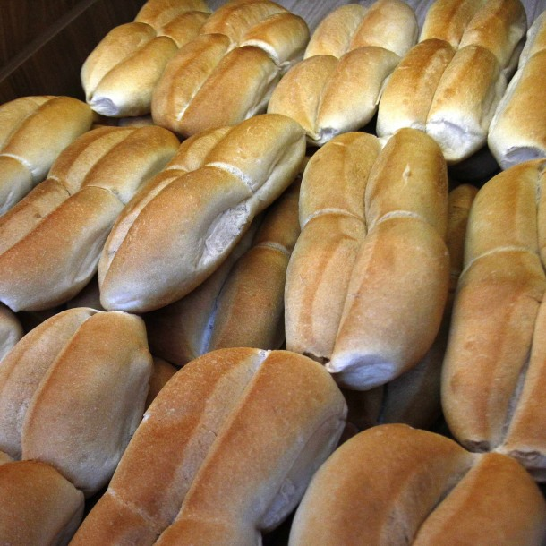

Marraqueta

Description
A classic of national bakery and a favorite of many, Chilean marraqueta
bread, also known as “pan batido” or “pan francés” depending on the region
of the country, has a century-old history that only reaffirms its
popularity, as today its production accounts for 70% of daily bread
consumption throughout the country.
Marraqueta is characterized by being a light bread made only from flour,
water, and yeast, without fat, similar to the French baguette or the
Spanish barra, with a crunchy texture and a rather neutral flavor.
Ingredients
- 1 kg of flour
- 600 ml of lukewarm water
- 20 g of salt (3 teaspoons)
- 15 g of dry yeast (2 tablespoons)
- 7 g of sugar (1 teaspoon)
Steps
-
Add some warm water to a large cup, add 15 grams of dry yeast or 45
grams of fresh yeast, sugar, stir to dissolve, and let it rest for 10
minutes in a warm place.
-
In a large bowl, sift the flour and salt, make a well in the center, and
add the yeast mixture and the remaining water. Mix everything with your
hands or a wooden spoon until you get a uniform, smooth, and semi-soft
mixture, knead for about 10 minutes, and transfer the dough to a greased
bowl. Cover with a clean cloth and let it ferment (rise) for about 30
minutes.
-
Divide the dough into portions of approximately 100 grams each, roll
each piece into a ball with the palm of your hand and gently knead into
a circular shape. Place on a clean surface and let them rest covered for
another 30 minutes.
-
Gather two portions of dough and knead gently to give an elongated
appearance, divide the dough in half perpendicularly with a long and
thin object, giving the classic appearance of a marraqueta bread.
Arrange the loaves on a buttered tray, brush with a little oil, and let
them rest again for another 30 minutes.
-
Preheat the oven to about 220°C (428°F) for about 15 minutes. Place the
loaves in the oven and bake for about 20 minutes until they are lightly
browned on the surface. Remove and cool on a rack.
-
Serve the marraqueta bread hot or cold, alone, with butter, or with your
preferred accompaniment.